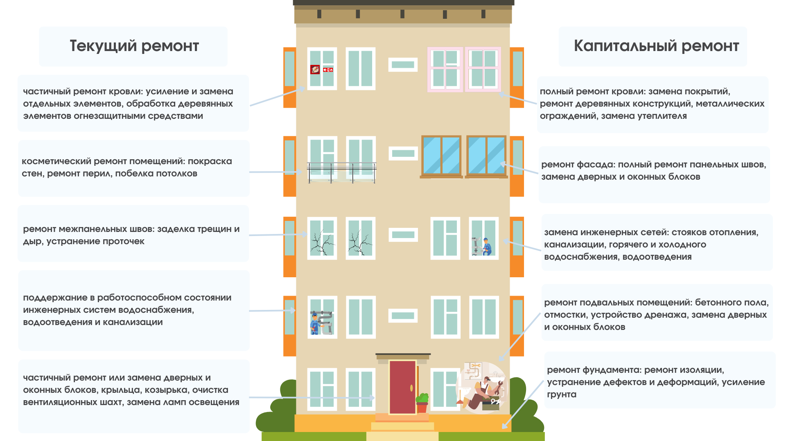

Чем отличается текущий ремонт от капитального
Чтобы без ошибок подготовить документы на закупку, важно определить, какой вид работ должен выполнить подрядчик. Иначе закупка не пройдет экспертизу и контракт могут аннулировать. На уроке разберетесь, чем отличается текущий ремонт от капитального.

В чем отличия текущего ремонта от капитального
Разница между текущим и капитальным ремонтом состоит в объеме работ. Например, при текущем ремонте системы отопления заменяют или восстанавливают часть коммуникаций, давших течь. А при капитальном система труб будет заменена полностью или в значительном объеме.
Текущий ремонт. При текущем ремонте здание практически не выбывает из эксплуатации, а его технические характеристики не меняются (письмо Минстроя от 27.02.2018 № 7026-АС/08).
Капитальный ремонт. При капитальном ремонте часть здания нередко выбывает из эксплуатации. Если проводите капитальный ремонт, обязательно составьте проектную документацию. Для текущего ремонта проектную документацию готовить не нужно (ч. 2 ст. 48 ГрК).
Не путайте капитальный ремонт с реконструкцией. Реконструкция — это изменение характеристик объекта строительства: площади, высоты и количества этажей.
Смотрите в интерактивной карте ремонта ниже самые частые виды работ, в которых путаются заказчики и к какому виду ремонта они относятся.

А теперь почувствуйте себя в роли эксперта по строительству. В левой части нарисовали исходное состояние здания детского сада, а в правой – то, что получилось после исполнения контракта. Ваша задача — определить вид работ, которые проводили на этом объекте.
Поздравляем! Вы получили еще один навык!
Чтобы закрепить полученные знания из урока, вам осталось выполнить два практических задания в тренажере «Правда-ложь». Прочитайте утверждение и определите, верное оно или ложное.
Упражнение: сохранённые карточки и иллюстрации
Статическое представление исходного задания. Проверка ответов платформы здесь недоступна. Источник и ограничения.
Из исходного упражнения, карточка 1 Заказчик должен отнести замену труб холодного водоснабжения к капитальному ремонту
Варианты: Правда / Ложь
Исходное пояснение: Замена труб холодного водоснабжения относят к капитальному ремонту. Капитальный ремонт проводите, если нужно восстановить или заменить отдельные части зданий или целые конструкции, детали и инженерно-техническое оборудование из-за их физического износа и разрушения (п. 14.2 ст. 1 ГрК).

Из исходного упражнения, карточка 2 Заказчик обязан разместить проектную документацию при проведении текущего ремонта
Варианты: Правда / Ложь
Исходное пояснение: Если проводите работы по текущему ремонту, проектную документацию составлять не нужно.
Теперь переходите в следующий курс. Из него вы узнаете, как рассчитать НМЦК на строительные работы по методике Минстроя, и многое другое.